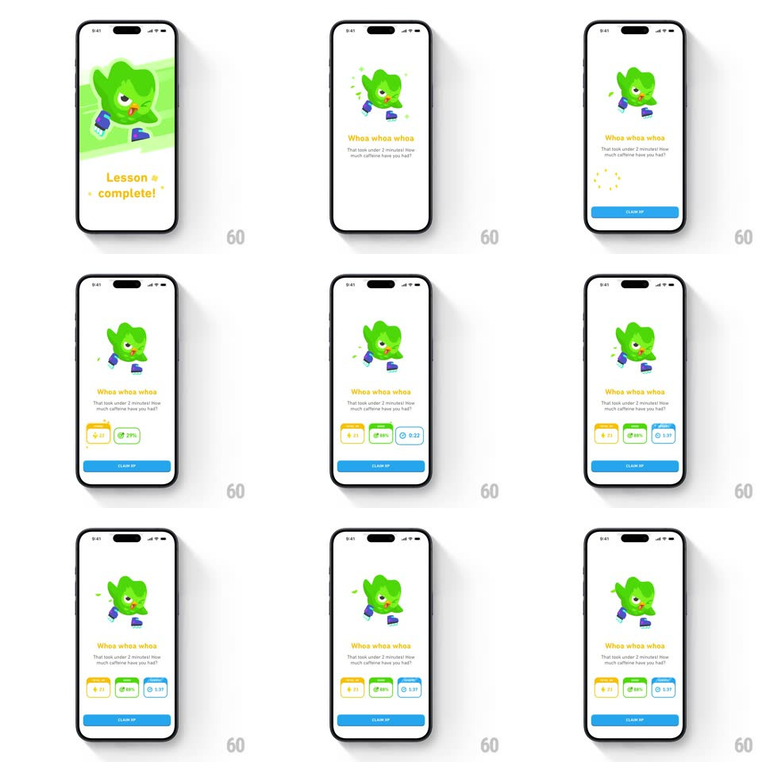

Media
Frame-by-frame

Rebuild this animation 1:1: Duolingo's speed-run lesson complete - Duo skates in on a green brush card, the caption calls out a sub-2-minute finish ("Whoa whoa whoa... How much caffeine have you had?"), and three stat cards stagger in above the Claim XP button.

Rebuild this animation 1:1: Duolingo's speed-run lesson complete - Duo skates in on a green brush card, the caption calls out a sub-2-minute finish ("Whoa whoa whoa... How much caffeine have you had?"), and three stat cards stagger in above the Claim XP button.
## Integration
Integration: stack-agnostic spec - springs given as stiffness/damping, timed motions as duration + curve; map every value to your framework and animation library of choice.
## Scene
White screen: a green brush-stroke card with Duo the owl skating (leaning pose, blue skates), "Lesson complete!" in yellow, then the caption "Whoa whoa whoa. That took under 2 minutes! How much caffeine have you had?", three stat cards (XP +21 on yellow, 88% on green, 1:37 on blue), and a blue CLAIM XP pill. Small sparkles surround Duo.
## Motion spec
Pattern: sequential celebration build, ~2.5s.
- Art: the brush card wipes in diagonally (350ms) as Duo slides in on skates (translateX -40px -> 0 with a slight lean, spring ~320/18, 450ms), sparkles popping around (scale 0 -> 1 -> 0, staggered 60ms).
- Title: "Lesson complete!" bounces up (spring ~300/18), then the caption fades in below (250ms, +150ms).
- Stats: the three cards pop in left to right (scale 0.6 -> 1.05 -> 1, spring ~360/20, 110ms stagger), each value counting up as it lands (300ms).
- Button: CLAIM XP slides up (250ms, +100ms) and holds.
## Calibration
- Duo's skate lean eases out to neutral - he lands, he doesn't keep sliding.
- Stat cards finish counting only after their spring settles.
## Reduced motion
All elements fade in place (200ms, staggered 80ms); values appear final.
## Don't miss
- The caption is the joke - it must stay readable; don't cover it with the stat cards.
- The brush card edge is rough and hand-painted, matching Duo's pose energy.